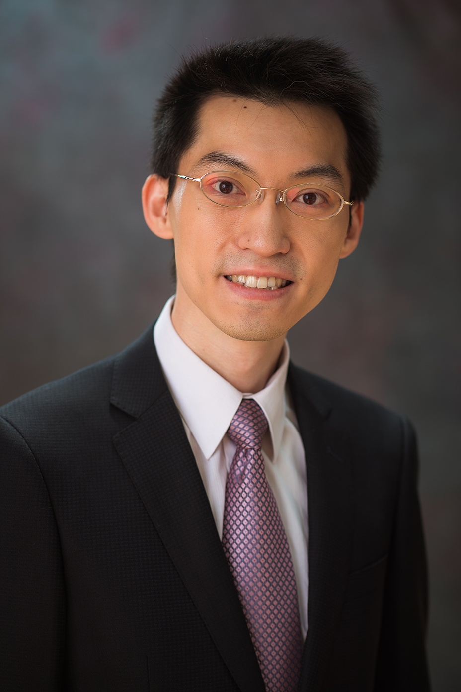

 Kun-Hsing "Kun" Yu, MD, PhD is an Assistant Professor in the Department of Biomedical Informatics at Harvard Medical School. He integrates cancer patients' multi-omics (genomics, epigenomics, transcriptomics, and proteomics) profiles with quantitative histopathology patterns to predict their clinical phenotypes. He developed the first fully-automated algorithm to extract thousands of features from whole-slide histopathology images, discovered the molecular mechanisms underpinning the microscopic phenotypes of tumor cells, and successfully identified previously unknown cellular morphologies associated with patient prognosis. Dr. Yu's research interests include quantitative pathology, machine learning, and translational bioinformatics.
Education:
- PhD, Biomedical Informatics, Stanford University (2012-2016)
- PhD Minor, Computer Science, Stanford University (2012-2016)
- MD, National Taiwan University, Taiwan (2004-2011)
Selected Awards:
- Blavatnik Center for Computional Biomedicine Award (2020)
- Schlager Family Award for Early Stage Digital Health Innovations (2018)
- Harvard Data Science Fellowship (2017-2019)
- Finalist, American Medical Informatics Association (AMIA) Dissertation Award (2017)
- Howard Hughes Medical Institute (HHMI) Fellowship (2015-2016)
- Winston Chen Stanford Graduate Fellowship (2012-2016)
- Best Intern Award, National Taiwan University Hospital, Taiwan (2011)
- Presidential Award, National Taiwan University, Taiwan (2005, 2008-2011)